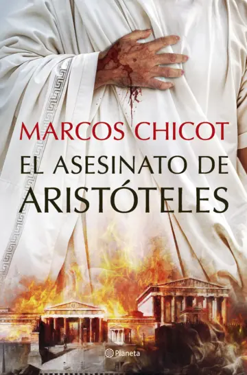
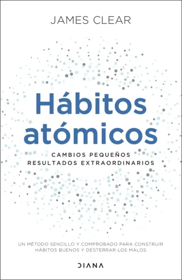

Libros
Demos un vistazo a los libros reseñados por nuestros expertos.
Te receto un gato
Click para ver más...
El bestseller japonés que ha engatusado a lectores de todo el mundo
Autor: Syou Ishida
Sinopsis
¿Quién imaginaría que la cura perfecta ronronea?
En un oscuro callejón de Kioto se esconde la Clínica Kokoro, un lugar envuelto en misterio al que solo llegan quienes más lo necesitan. Su peculiar tratamiento consiste en “prescribir” gatos, una solución que desconcierta a los pacientes, pero que guarda el potencial de cambiar sus vidas.
Guiados por el excéntrico Dr. Nike y su malhumorada enfermera Chitose, los pacientes buscan respuestas: un joven administrador, cómo recuperar la alegría tras perder su empleo; una madre agotada, la forma de reconectar con su hija; una diseñadora, el descanso que tanto necesita; y una geisha, el consuelo tras una pérdida dolorosa. Cada uno enfrenta sus conflictos internos mientras encuentra en sus compañeros felinos una inesperada guía, demostrando que, a veces, el amor y la compañía de un gato pueden ser el primer paso hacia la sanación.
Reseña de nuestros expertos.

Novela sencilla y reconfortante de estilo japonés en la que en cada capítulo ayudan a una persona diferente.
En este libro vas a encontrar varias historias de personas que tienen un problema, desde que no pueden dormir, problemas en el trabajo... la sinopsis ya te cuenta un poco los problemas principales. Todas estas personas acuden a la Clínica Kokoro en busca de una solución pero lo que no esperan es que les den un gato, ¡un gato! No se lo pueden creer, ¿Qué clase de clínica es esta que te dan un gato? Pues una clínica que cree que la solución a la mayoría de los problemas ronronea. Cada capítulo está dedicado a una historia. No te puedo contar mucho más ya que sería desvelar que pasa después de llevarse a los gatos, pero si que te puedo contar lo que sentí y lo que me pareció.
Este libro me atrapó por completo desde el principio, lo disfruté de principio a fin, no se me hizo pesado y me sacó de un largo parón lector. Quizás si que tiene que ver que me encantan los gatos, pero no solo eso, la historia es... es agradable y acogedora, es como leer en un lugar cómodo, tapada con una manta calentita y suave mientras tomas tu bebida favorita, así sentí este libro. Las historias de los personajes me gustaron y me hicieron reflexionar, al ser cada una un capítulo pues no son ni largas ni cortas, así que ninguna me pasó rápida ni lo sentí corto, a pesar de ello al cerrar el libro sentí pena, pena de haberlo terminado, de no seguir en ese mundo, de no conocer más pacientes de la Clínica Kokoro.
La idea de que la cura puede ser un gato me pareció muy bonita, sobre todo por como está tratada, con cuidado, respeto y amor por los gatos. Sentí reales los personajes y las historias. En definitiva, ¡me encantó! un libro que recomendaré a todos los amantes de los gatos y las historias acogedoras, agradables y que se leen con facilidad.
Comparte tu opinión sobre este libro
Opiniones de usuarios:
El asesinato de Aristóteles

Click para ver más...
Cuando los dioses callan y los reyes mueren, la historia la escriben los que sobreviven. Un thriller lleno de conspiración, pasión y peligro.
Autor: Marcos Chicot
Sinopsis
Aristóteles es el filósofo más prestigioso de Grecia y el maestro de Alejandro Magno, el conquistador invencible que ha sometido todas las ciudades griegas y la mayor parte del mundo conocido. La relación de Aristóteles con el poderoso rey hace que muchos atenienses deseen acabar con él, pero el aura de Alejandro lo protege.
Sin embargo, eso está a punto de cambiar.
En medio de una época que llega a su fin, el ateniense Prometeo y la espartana Penélope se ven arrastrados por los peligros que se ciernen sobre Aristóteles. Mientras luchan por sobrevivir, la sombra de un antiguo secreto alterará sus destinos en un mundo que comienza a desmoronarse.
Reseña de nuestros expertos.
Un Thriller a la altura de su escritor que nos permite imaginar, recorrer la historia, filosofía y política.
Marcos Chicot cierra su trilogía sobre la Grecia clásica con El asesinato de Aristóteles, una novela que entrelaza historia, filosofía y ficción en una trama política llena de intriga. La obra retrata a un Aristóteles en una Atenas resentida bajo el dominio macedonio, donde su amistad con Alejandro Magno lo convierte en blanco de conspiraciones mientras enseña en el Liceo. Chicot mezcla personajes históricos con creaciones propias, como la espartana Penélope o la anciana filósofa Altea, para explorar temas universales: la corrupción del poder, la lucha entre razón y demagogia, y el peligro de las ideas revolucionarias. Con un estilo ágil y capítulos breves que recuerdan al lenguaje visual de las series, el autor —psicólogo de formación— dota a sus personajes de profundidad psicológica, incluso sometiéndolos a tests ficticios. El título, simbólico, alude no al asesinato físico del filósofo, sino al intento de silenciar su pensamiento, un conflicto que Chicot vincula con las democracias actuales. La trilogía, ya recomendada en ámbitos educativos por su rigor histórico y recursos didácticos, culmina con esta entrega que reafirma su éxito: una narrativa tan didáctica como adictiva, donde el pasado dialoga con el presente y los ideales de Sócrates, Platón y Aristóteles resuenan con vigencia. Chicot no solo entretiene, sino que invita a reflexionar sobre la eterna batalla entre ética y poder.
Comparte tu opinión sobre este libro
Opiniones de usuarios:
Hábitos Atómicos

Click para ver más...
Cambios pequeños, resultados extraordinarios
Autor: James Clear
Sinopsis
A menudo pensamos que para cambiar de vida tenemos que pensar en hacer cambios grandes. Nada más lejos de la realidad. Según el reconocido experto en hábitos James Clear, el cambio real proviene del resultado de cientos de pequeñas decisiones: hacer dos flexiones al día, levantarse cinco minutos antes o hacer una corta llamada telefónica.
Clear llama a estas decisiones “hábitos atómicos”: tan pequeños como una partícula, pero tan poderosos como un tsunami. En este libro innovador nos revela exactamente cómo esos cambios minúsculos pueden crecer hasta llegar a cambiar nuestra carrera profesional, nuestras relaciones y todos los aspectos de nuestra vida.
Reseña de nuestros expertos.
Hábitos atómicos, el mejor libro que vi para mejorar nuestras vidas
Me encanta este libro, yo soy una persona muy desorganizada, con hábitos muy malos y todo eso, pero este libro me ayudó a encontrar valor en los buenos hábitos y, aunque hace poco lo leí, puse en practica algunos de los consejos de este libro y mejoré significativamente, les cuento.
Hábitos Atómicos de James Clear enseña que el verdadero cambio no proviene de metas ambiciosas ni de fuerza de voluntad, sino de pequeños hábitos diarios (mejorar un 1% cada día) que, al acumularse, generan resultados extraordinarios. La clave está en diseñar sistemas efectivos basados en cuatro leyes: hacer los buenos hábitos obvios (señales claras), atractivos (vinculados a recompensas), fáciles (simplificando la acción) y satisfactorios (refuerzo positivo), mientras se invierten estas leyes para eliminar malos hábitos. Clear enfatiza que la identidad ("quién quieres ser") es más poderosa que los objetivos, y propone técnicas como el apilamiento de hábitos (añadir nuevos hábitos a rutinas existentes) y el rediseño del entorno para reducir fricciones. Con ejemplos prácticos y fundamentos científicos, el libro demuestra que la consistencia en acciones mínimas (como leer dos páginas diarias o hacer flexiones al despertar) crea cambios duraderos, transformando no solo lo que haces, sino también cómo te percibes a ti mismo.